Estudar e desenvolver utilizando tecnologias e práticas novas do mercado para criar soluções ricas e robustas.
Como desenvolvedor, não posso me dar ao luxo de deixar de aprender.
É uma necessidade, tanto pessoal quanto profissional, buscar novidades na
área de
desenvolvimento e validar
se sua aplicação tem impacto positivo em meu ambiente de trabalho.
Nem toda nova metodologia / prática / tecnologia é viável e nem todo projeto pode ser
atualizado do dia
para noite,
mas sempre busco alternativas para inovar dentro das possibilidades do escopo e
tempo
disponíveis.
Meu objetivo é estar em um constante ciclo de aprendizado e aplicação.
